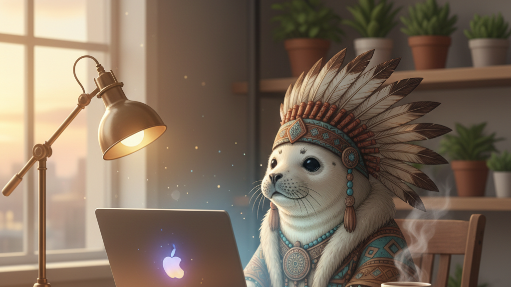

過去の自分から素材集め
Pineconeに溜めた進捗・発言を検索し、その日のネタを自動で拾い上げます。
ナレッジ連携
その日の進捗を、AIがあなたの口調でツイートに書き起こし、定刻に自動投稿。確認はLINEで「OK」の一言だけ。「発信を続けられない」を、仕組みで終わらせます。
本業に追われ、SNSの投稿を考える数十分すら捻出できない。気づけば数週間放置。
ネタ探しと文章づくりがしんどい。毎回ゼロから考えるのが続かない原因。
完全自動投稿はAIが変な文を出さないか不安。でも毎回手動だと結局続かない。
Pineconeに溜めた進捗・発言を検索し、その日のネタを自動で拾い上げます。
Claudeが「あなたらしい」言い回しで投稿文を生成。遊牧民ペルソナの世界観も保ちます。
下書きがLINEに届き、「OK」で投稿・「直して」で再生成。暴走しない半自動運用。
クラウドのCronで朝7時に発火。挿絵も自動生成。あなたは寝ていても発信が続きます。
本文に合わせてAIが挿絵まで生成します。これは実際に生成された投稿画像の一例です。
